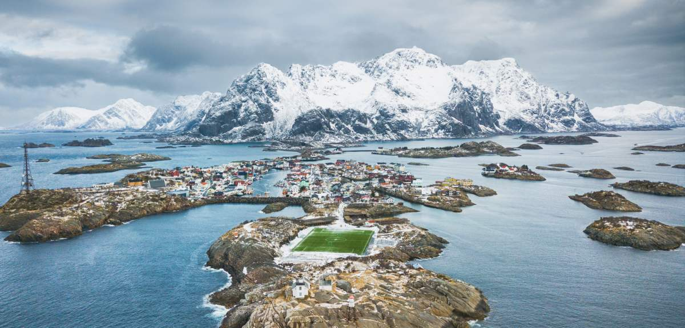

Bienvenue en Norvège
Villes à l’ambiance urbaine cool, fjords scintillants, aurores boréales et villages isolés au nord du cercle polaire :
la Norvège est un pays très étendu, véritable mine d'activités et de sites à visiter.

LE TOP-10 DES SITES NORVÉGIENS
1. La région d’Oslo
 La capitale norvégienne, désignée Capitale verte de l’Europe 2019, est une véritable ruche. Scène culinaire innovante, mosaïque de quartiers modernes et dynamiques, hôte d’innombrables événements et de tout nouveaux musées et attractions, Oslo n'a pas fini de vous surprendre. Entre l’Oslofjord et les épaisses forêts qui bordent la ville, vous pourrez aisément alterner sorties urbaines et activités de pleine nature comme le vélo, le ski et les excursions d’île en île. Dans les régions voisines de Østfold et de Vestfold, la côte abrite, entre autres charmantes bourgades, Fredrikstad et Tønsberg. À environ une heure de route d’Oslo se trouve le nouveau grand pôle artistique, Hadeland, avec le musée Kistefos et son spectaculaire bâtiment torsadé, The Twist.
La capitale norvégienne, désignée Capitale verte de l’Europe 2019, est une véritable ruche. Scène culinaire innovante, mosaïque de quartiers modernes et dynamiques, hôte d’innombrables événements et de tout nouveaux musées et attractions, Oslo n'a pas fini de vous surprendre. Entre l’Oslofjord et les épaisses forêts qui bordent la ville, vous pourrez aisément alterner sorties urbaines et activités de pleine nature comme le vélo, le ski et les excursions d’île en île. Dans les régions voisines de Østfold et de Vestfold, la côte abrite, entre autres charmantes bourgades, Fredrikstad et Tønsberg. À environ une heure de route d’Oslo se trouve le nouveau grand pôle artistique, Hadeland, avec le musée Kistefos et son spectaculaire bâtiment torsadé, The Twist.
2. Tromsø et le pays des aurores boréales
 La capitale de l’Arctique, Tromsø, se situe en plein cœur de la Norvège du Nord. Si, sur la liste de vos rêves de voyages, figurent aurores boréales, baleines, soleil de minuit et aventures en pleine nature, n’hésitez plus, c’est là qu'il faut aller. Profitez des conditions idéales offertes par la région du Lyngenfjord pour le ski de randonnée et la marche, découvrez la culture samie dans des villes comme Karasjok et Alta et tenez-vous sur l’extrême pointe nord de l’Europe au cap Nord. Dans l’est de cette vaste région se trouve la péninsule de Varanger, paradis des ornithologues. Découvrez la pêche au crabe ou le traîneau à chiens à Kirkenes, où vous pourrez également passer la nuit dans un hôtel de glace. Dans les environs de Tromsø, plusieurs îles méritent le détour, dont Senja Kvaløya et Sommarøy.
La capitale de l’Arctique, Tromsø, se situe en plein cœur de la Norvège du Nord. Si, sur la liste de vos rêves de voyages, figurent aurores boréales, baleines, soleil de minuit et aventures en pleine nature, n’hésitez plus, c’est là qu'il faut aller. Profitez des conditions idéales offertes par la région du Lyngenfjord pour le ski de randonnée et la marche, découvrez la culture samie dans des villes comme Karasjok et Alta et tenez-vous sur l’extrême pointe nord de l’Europe au cap Nord. Dans l’est de cette vaste région se trouve la péninsule de Varanger, paradis des ornithologues. Découvrez la pêche au crabe ou le traîneau à chiens à Kirkenes, où vous pourrez également passer la nuit dans un hôtel de glace. Dans les environs de Tromsø, plusieurs îles méritent le détour, dont Senja Kvaløya et Sommarøy.
3. Les Lofoten et le Nordland
Sommets vertigineux, fjords étincelants, authentiques villages de pêcheurs et plages photogéniques. Sans parler des aurores boréales et du soleil de minuit ! Vous avez probablement déjà vu ces clichés (nombreux !) envoûtants des Lofoten et des Vesterålen sur Instagram. Nous vous conseillons vivement de visiter ces destinations hors saison, quand la foule s’est retirée. Pour ceux qui veulent faire le plein de grand air, la région de Narvik, et celle moins connue de Helgeland, un peu plus au sud, sont des paradis pour le ski de randonnée et la marche. Vous pourrez prendre la Route du littoral entre Trøndelag et Bodø, élue parmi les plus belles routes du monde. La dynamique ville de Bodø, plus grande ville du comté du Nordland, vous propose toute une palette d'activités de pleine nature, ainsi qu'une scène culturelle très vivante. D'ailleurs, Bodø sera la Capitale européenne de la culture 2024.
4. Bergen et les fjords de l’ouest
 La seconde plus grande ville du pays, Bergen, réunit en son sein des sites inscrits sur la liste du patrimoine mondial de l’UNESCO, des restaurants cotés, un secteur de la mode et une scène musicale dynamiques. Visitez des musées comptant parmi les plus réputés de Norvège, tels les musées d'art composant le KODE, des maisons de compositeurs. Flânez dans les petites ruelles pavées et contemplez la ville d’en haut, depuis le sommet d'une des sept collines l’encerclant. Bergen est le point d’accès à quelques-uns des fjords les plus connus de Norvège, notamment le Sognefjord, plus long et profond fjord norvégien, au nord, et le Hardangerfjord, qui abrite le célèbre rocher de Trolltunga, au sud. Bon nombre de fjords possèdent des ramifications qui sont au moins aussi belles, quoique beaucoup moins fréquentées, que le fjord principal. Rejoignez le village de Flåm, en bord de fjord, par la ligne de Flåm, élue parmi les plus beaux parcours en train du monde. Pour vous défouler en pleine nature dans un environnement qui ne manque pas de piquant, visitez la kommuner de Voss et le Nordfjord.
La seconde plus grande ville du pays, Bergen, réunit en son sein des sites inscrits sur la liste du patrimoine mondial de l’UNESCO, des restaurants cotés, un secteur de la mode et une scène musicale dynamiques. Visitez des musées comptant parmi les plus réputés de Norvège, tels les musées d'art composant le KODE, des maisons de compositeurs. Flânez dans les petites ruelles pavées et contemplez la ville d’en haut, depuis le sommet d'une des sept collines l’encerclant. Bergen est le point d’accès à quelques-uns des fjords les plus connus de Norvège, notamment le Sognefjord, plus long et profond fjord norvégien, au nord, et le Hardangerfjord, qui abrite le célèbre rocher de Trolltunga, au sud. Bon nombre de fjords possèdent des ramifications qui sont au moins aussi belles, quoique beaucoup moins fréquentées, que le fjord principal. Rejoignez le village de Flåm, en bord de fjord, par la ligne de Flåm, élue parmi les plus beaux parcours en train du monde. Pour vous défouler en pleine nature dans un environnement qui ne manque pas de piquant, visitez la kommuner de Voss et le Nordfjord.